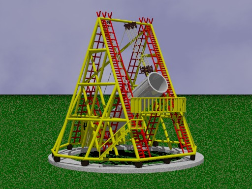

Overview
This include file was created by Chris Walker and is released under the terms of the CC-LGPL to enable you to use, modify and redistribute it for both commercial and non-commercial purposes. You can help improve the model by submitting enhanced versions back into the collection by registering yourself on the web site. This download consists of:
- an include file containing the object definition for a Herschel Telescope with a 40ft focal length
- a sample scene file to illustrate the use of the include file
- a copy of this documentation and the image files used in it
- a few other files that you may find handy if you submit a new version to the collection
Although William Herschel made over 300 telescopes, this was his largest and the largest in the World at that time, with a focal length of 40 ft. Other telescopes and many other astronomical features have been named after Herschel in recognition of his achievements. Herschel became famous by discovering the first planet that was not visible to the naked eye (later named Uranus). Having constructed this telescope in Slough, his first night of observation revealed a previously unknown moon of Saturn.
You can add this Herschel Telescope to your scene file by including the "herschel.inc" file.
light_source { <-15,7.5,-15>, rgb 1}
camera {location -y look_at 0.5*y}
#include "herschel.inc"
The file returns a single object centred at the origin and standing on the plane Y=0. You can therefore wrap it in an object statement and transform it as required to fit into your scene. For example:
light_source { <-15,7.5,-15>, rgb 1}
camera {location -y look_at 0.5*y}
object {
#include "herschel.inc"
scale 0.5
rotate <0,30,0>
translate <5,0,3>
}

The materials used to construct the telescope are declared at the top of the include file, so you can easily adjust the colours, finishes and normals by changing the following declarations:
| Herschel_RopeMaterial | Used for the rope that adjusts the angle of the telescope. |
|---|
| Herschel_BlockMaterial | Used for the blocks through which the rope runs. |
|---|
| Herschel_WheelMaterial | Used for the wheels on which the telescope rotates. |
|---|
| Herschel_RungMaterial | Used for the rungs of the various ladders. |
|---|
| Herschel_LadderMaterial | Used for the side supports of the various ladders. |
|---|
| Herschel_FrameMaterial | Used for the main wooden frame of the structure. |
|---|
| Herschel_CasingMaterial | Used for the cylindrical casing of the telescope itself. |
|---|
| Herschel_BaseMaterial | Used for the base upon which the whole structure is mounted. |
|---|
Change History
The initial herschel telescope model was created by Chris Walker who was living in Slough at the time. He made it available for download from Geocities until the web server service closed in October 2009, at which point he kindly gave his permission for it to be redistributed on the POV-Ray Object Collection license (CC-LGPL).
Version 1.0 of the include file was adapted to conform to the naming conventions for the POV-Ray Object Collection by Chris Bartlett in September 2009. All identifiers are now prefixed with 'Herschel_' and all file names start with 'herschel'. The following additional changes were made:
- The material declarations were taken to the top of the include file
- The content was wrapped in a union statement, so that a single object is returned
- The returned object was centred over the origin to make it easier to orient, move around and resize.
Return to Table of Contents